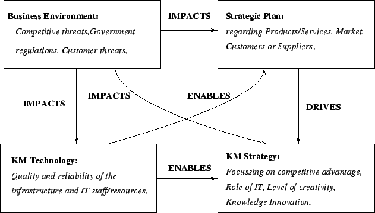
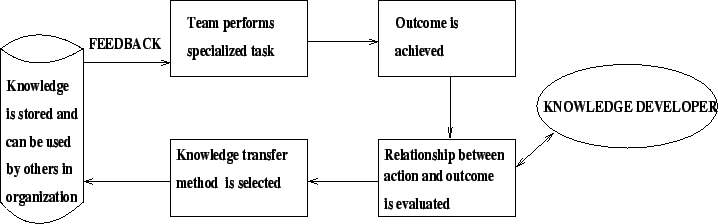
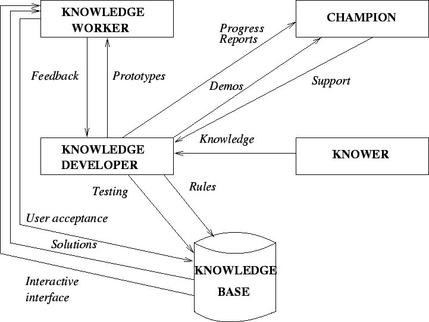

Next: Knowledge Creation & Knowledge
Up: Knowledge Management Systems Life
Previous: Key Similarities
Contents
- Primarily due to lack of standardization, a number of approaches
have been proposed for KMSLC.
- Refer to Table 3.2 in page 65 of
your textbook for a list of representative approaches, and
refer to Figure 3.3 in page 66 of
your textbook for a proposed hybrid life cycle.
- The conventional systems development approach can still be used for
developing KM systems, but it is usually being replaced by iterative
design, prototyping etc.
Evaluating the Existing Infrastructure
KM systems are developed in order to satisfy the need for
improving productivity and potential of employees and the company as a
whole. The existing knowledge infrastructure is evaluated so that it can
give the perception that the present ways of doing things
are not just abandoned in preference for a new system.
System Justification:
It involves answers to the following
questions:
- Is existing knowledge going to be lost through retirement, ,
transfer, or departure to other organizations?
- Is the proposed KM system needed in multiple locations?
- Are experts available and willing to support the building of the
proposed KM system?
- Does the concerned problem needs years of proper experience and
cognitive reasoning to solve?
- While undergoing knowledge capture, would it be possible for the
expert to articulate how the problem will be solved?
- How critical is the knowledge that is to be captured?
- Are the involved tasks nonalgorithmic in nature?
- Would it possible to find a champion within the organization?
Scoping:
According to the textbook, the term scoping means limiting the breadth and depth of the project within the financial,
human resource, and operational constraints.
Feasibility: Feasibility study involves addressing the following
questions:
- Is it possible to complete the project within the expected timeframe?
- Is the project affordable?
- Is the project appropriate?
- How frequently the system would be consulted at what will be associated
cost?
The traditional approach used to conduct a feasibility study
can be used for building a KM system. This involves the following tasks:
- Forming a knowledge management team.
- Preparing a master plan.
- Performing cost/benefit analysis of the proposed system.
- Quantifying system criteria and costs.
User Support
- Is the proposed user
aware of the fact that the new KM system is being developed? How it is
perceived?
- How much involvement can be expected from the user while the
building process continues?
- What type of users training will needed when the proposed system
is up and running?
- What kind of operational support should be provided?
Role of Strategic Planning
- As a consequence of evaluating the existing infrastructure,
the concerned organization
should develop a strategic plan which should aim at advancing the
objectives of the organization with the proposed KM system in mind.
- Areas to be considered:
Figure 2.3:
Matching business strategies with KM strategies
|

|
Forming a KM team
Forming a KM team usually means
- Identifying the key units, branches, divisions etc. as the key
stakeholders in the prospective KM system.
- Strategically, technically, and organizationally balancing the team
size and competency.
Factors impacting team success:
- Quality and capability of team members (in terms of personality,
experience, and communication skill).
- Size of the team.
- Complexity of the project.
- Team motivation and leadership
- Promising only what that can be actually delivered.
Capturing Knowledge
- Capturing Knowledge involves extracting, analyzing and interpreting
the concerned knowledge that a human expert uses to solve a specific
problem.
- Explicit knowledge is usually captured
in repositories from appropriate documentation, files etc.
- Tacit knowledge is usually captured from experts, and from
organization's stored database(s).
- Interviewing is one of the most popular methods used to capture
knowledge.
- Data mining is also useful in terms of using intelligent agents
that may analyze the data warehouse and come up with new findings.
- In KM systems development, the knowledge developer acquires the
necessary heuristic knowledge from the experts for building the
appropriate knowledge base.
- Knowledge capture and knowledge transfer are often carried out through
teams (refer to Figure 2.4).
- Knowledge capture includes determining feasibility, choosing the
appropriate expert, tapping the experts knowledge, retapping knowledge
to plug the gaps in the system, and verify/validate the knowledge base
(refer to Table 3.4 in page 76 of your textbook).
Figure 2.4:
Matching business strategies with KM strategies
|

|
The Role of Rapid Prototyping
- In most of the cases, knowledge developers use iterative
approach for capturing knowledge.
- Foe example, the knowledge developer may start with a prototype
(based on the somehow limited knowledge captured from the expert during
the first few sessions).
- The following can turn the approach into rapid prototyping:
- Knowledge developer explains the preliminary/fundamental procedure
based on rudimentary knowledge extracted from the expert during
the few past sessions.
- The expert reacts by saying certain remarks.
- While the expert watches, the knowledge developer
enters the additional knowledge into the computer-based system
(that represents the prototype).
- The knowledge developer
again runs the modified prototype and continues adding additional
knowledge as suggested by the expert till the expert is satisfied.
- The spontaneous, and iterative process of building a knowledge base
is referred to as rapid prototyping.
Expert Selection
The expert must have excellent communication skill to be able to
communicate information understandably and in sufficient detail.
Some common questions that may arise in case of expert selection:
- How to know that the so-called expert is in fact an expert?
- Will he/she stay with the project till its completion?
- What backup would be available in case the expert loses interest
or quits?
- How is the knowledge developer
going to know what does and what does not lie within the
expert's area of expertise?
The Role of the Knowledge Developer
- The knowledge developer
can be considered as the architect of the system.
- He/she identifies the problem domain, captures knowledge, writes/tests
the heuristics that represent knowledge, and co-ordinates the entire
project.
- Some necessary attributes of knowledge developer:
- Communication skills.
- Knowledge of knowledge capture tools/technology.
- Ability to work in a team with professional/experts.
- Tolerance for ambiguity.
- To be able ti think conceptually.
- Ability to frequently interact with the champion, knowledge
workers and knowers in the organization.
Figure 2.5:
Knowledge Developer's Role
|

|
Designing the KM Blueprint
This phase indicates the beginning of designing the IT infrastructure/
Knowledge Management infrastructure. The KM Blueprint (KM system design)
addresses a number of issues.
- Aiming for system interoperability/scalability with existing IT
infrastructure of the organization.
- Finalizing the scope of the proposed KM system.
- Deciding about the necessary system components.
- Developing the key layers of the KM architecture to meet
organization's requirements. These layers are:
- User interface
- Authentication/security layer
- Collaborative agents and filtering
- Application layer
- Transport internet layer
- Physical layer
- Repositories
Testing the KM System
This phase involves the following two steps:
- Verification Procedure: Ensures that the system is right, i.e.,
the programs do the task that they are designed to do.
- Validation Procedure: Ensures that the system is the right
system - it meets the user's expectations, and will be usable on demand.
Implementing the KM System
- After capturing the appropriate knowledge, encoding in the knowledge
base, verifying and validating; the next task of the knowledge
developer is to implement the proposed system on a server.
- Implementation means converting the new KM system into actual
operation.
- Conversion is a major step in case of implementation.
- Some other steps are postimplementation review and
system maintenance.
Quality Assurance
It indicates the development of controls to ensure a quality KM system.
The types of errors to look for:
- Reasoning errors
- Ambiguity
- Incompleteness
- False representation
Training Users
- The level/duration of training depends on the user's
knowledge level and the system's attributes.
- Users can range from novices (casual users with very limited
knowledge)
to experts (users with prior IT experience and knowledge of
latest technology).
- Users can also be classified as tutors (who acquires a working
knowledge in order to keep the system current), pupils (unskilled
worker who tries to gain some understanding of the captured knowledge), or
customers (who is interested to know how to use the KM system).
- Training should be geared to the specific user based on capabilities,
experience and system complexity.
- Training can be supported by user manuals, explanatory facilities, and
job aids.
Managing Change
Implementation means change, and organizational members usually resist
change. The resistors may include:
- Experts
- Regular employees (users)
- Troublemakers
- Narrow minded people
Resistance can be seen in the form of following personal reactions:
- Projection, i.e., hostility towards peers.
- Avoidance, i.e., withdrawal from the scene.
- Aggression.
Postsystem Evaluation
Key questions to be asked in the postimplementation stage:
- How the new system improved the accuracy/timeliness of
concerned decision making tasks?
- Has the new system caused organizational changes? If so, how
constructive are the changes?
- Has the new system affected the attitudes of the end users? If so, in
what way?
- How the new system changed the cost of business operation? How
significant has it been?
- In what ways the new system affected the relationships between end
users in the organization?
- Do the benefit obtained from the new system justify the cost of
investment?
Implications for KM
The managerial factors to be considered:
- The organization must make a commitment to user training/education
prior to building the system.
- Top Management should be informed with cost/benefit analysis of the
proposed system.
- The knowledge developers and the people with potential to do knowledge
engineering should be properly trained.
- Domain experts must be recognized and rewarded.
- The organization needs to do long-range strategic planning.
Some questions to be addressed by the management regarding
systems maintenance:
- Who will be the in charge of maintenance?
- What skills the maintenance specialist needs to have?
- What would be the best way to train the maintenance specialist?
- What incentives should be provided to ensure quality maintenance?
- What types of support/funding will be required?
- What relationship should be established between the maintenance
of the KM system and the IT staff of the organization?
Next: Knowledge Creation & Knowledge
Up: Knowledge Management Systems Life
Previous: Key Similarities
Contents
Knowledge Management Systems
2004-11-01